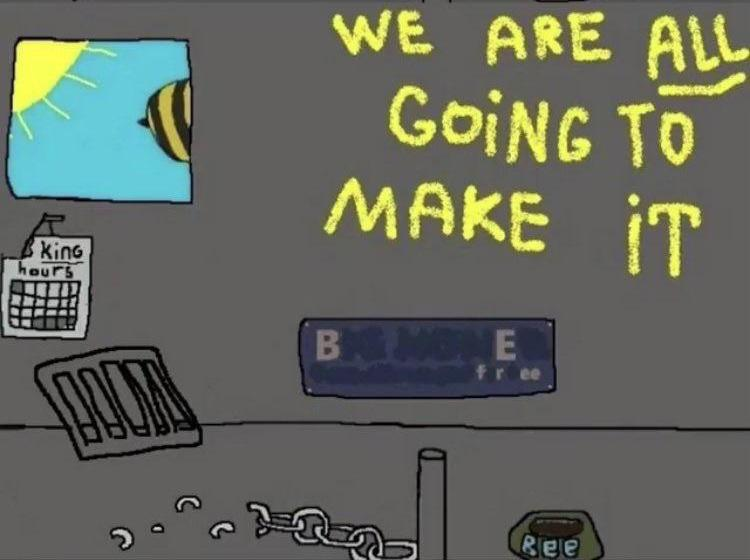
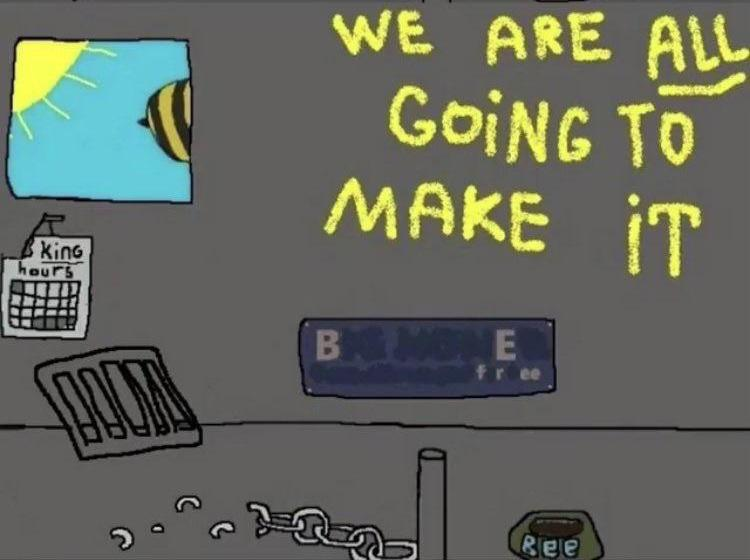

WEBPAGE UNDER CONSTRUCTION!!!!
Faith
Code
Computers
Art
Writing
Music
Library
Maths
Cummings, J. (2019). Real Analysis: A Long-Form Mathematics Textbook. Self-published.
Cummings, J. (2021). Proofs: A Long-Form Mathematics Textbook. Self-published.
Gamelin, T. W. (1999). Introduction to Topology. Dover Publications.
Needs Categorization
Saleh, B. E. A., Teich, M. C. (2019). Fundamental of Photonics. Wiley.
Scherz, P., Monk, S. (2016). Practical Electronics for Inventors. McGraw Hill TAB.
Horowitz, P., Hill, W. (2015). The Art of Electronics. Cambridge University Press.
Physics
Griffiths, D. J. (2023). Introduction to Electrodynamics. Cambridge University Press.
Taylor, J. R. (2004). Classical Mechanics. University Science Books.
Schroeder, D. (2021). An Introduction to Thermal Physics. Oxford University Press.
Chemistry
Ballistics
Carlucci, D. E., Jacobson, S. S. (2025). Ballistics: Theory and Design of Guns and Ammunition. CRC Press.
Chinn, G. M. (1955). Volume 4
Chinn, G. M. (1955). Volume 3
Chinn, G. M. (1955). Volume 2
Chinn, G. M. (1955). Volume 1
Rocha, J.
Papers
Programming
Stroustrup B. (2011). Programming: Principles and Practices
Cormen, T. H., Leiserson, C. E., Rivest, R. L., & Stein, C. (2010). Introduction to Algorithms. The MIT Press.
Portfolio
Bereft of content
Drones
Guns
Design
Manufacturing
Additive
FFF
SLA
LPB-F
Subtractive
Mill
Lathe
Inspirationals
 
